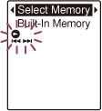
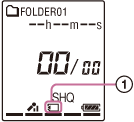

IC RecorderICD-PX333/PX333F
Selecting the memory
You can switch the memory between the built-in memory and a memory card.
- In the stop mode, select DISP/MENU - “Select Memory,” and then press
 PLAY/STOP・ENTER.
PLAY/STOP・ENTER.

- Press –
 or
or  + to select “Built-In Memory” or “Memory Card,” and then press PLAY/STOP・ENTER.
+ to select “Built-In Memory” or “Memory Card,” and then press PLAY/STOP・ENTER. - Press
 (stop) to exit the menu mode.
(stop) to exit the menu mode.

When you select “Memory Card,” the memory card indicator () is displayed.
Hint
- If the memory card has not been formatted, switch the memory using the “Select Memory” menu, and then select “Detail Menu” - “Format” to format the memory card.